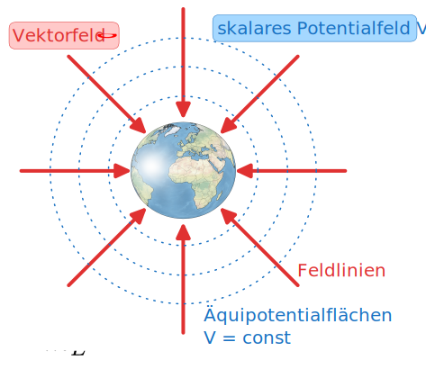

Geophysikalische Grundlagen
- Feld- und Potentialbegriff
- Gravitationsbeschleunigung der Erde
- Beschreibung der Gestalt des Erdkörpers
- Newtonsches Volumenpotential
Gravitationsfeld der Erde
- Natürlich vorhandenes geophysikalisches Feld
- Passives geophysikalisches Messverfahren
Ausgenutzt wird der Dichteunterschied zwischen Erkundungsobjekt und Nebengestein.
Dichte ist der physikalische Parameter.
Physikalische Grundlagen
Gravitation ist eine fundamentale physikalische Eigenschaft von Masse

Newtonsches Gravitationsgesetz
Beschreibung der physikalischen Wechselwirkung zwischen Massen
Betrag der Gravitationskraft: \[
|\mathbf{F}| = f \frac{m_{E}\, m}{|\mathbf{r}|^{2}}
\]
Gravitationskonstante \(f = (6.6742 \pm 0.0018) \times 10^{-11} \mathrm{~m^3 \cdot kg^{-1} \cdot s^{-2}}\)
Die auf beide Massen wirkende Kräfte haben denselben Betrag und zeigen jeweils auf den anderen Massepunkt.
Mit \(\mathbf{r}_{21} = \mathbf{r}_{2} - \mathbf{r}_{1}\) ist \[
\mathbf{F}_{21} = -f \frac{m_{E}\, m}{|\mathbf{r}_{21}|^3} {\mathbf{r}}_{21}
\]
Die Kraft \(\mathbf{F}_{21}\) weist von der Masse \(m\) zur Masse \(m_{E}\).
Es folgt aus dem Zweiten Newtonschen Gesetz:
\[
\mathbf{F} = m \mathbf{g},
\]
also ist
\[
\mathbf{g} = -f \frac{m_{E}}{|\mathbf{r}_{21}|^3} {\mathbf{r}}_{21}.
\]
Das ist die baryzentrische Gravitationsbeschleunigung.
Mit \(\mathbf{r} = \mathbf{r}_{21}\) und \(\hat{\mathbf{r}} = \mathbf{r}/|\mathbf{r}|\) erhalten wir
\[
\mathbf{g} = - f \frac{m_{E}}{|\mathbf{r}|^2} \hat{\mathbf{r}}
\]
Die Richtung der Beschleunigung weist von \(m\) nach \(m_{E}\).
Die in der angewandten Gravimetrie übliche Einheit der Gravitationsbeschleunigung ist das Gal.
1 Gal = \(10^{-2}\, \mathrm{m} \cdot \mathrm{s}^{-2}\)
1 mGal = \(10^{-5}\, \mathrm{m} \cdot \mathrm{s}^{-2} = 10\, \mu\mathrm{m} \cdot \mathrm{s}^{-2}\)
Das Gravitationsfeld ist konservativ.
Verschiebungsarbeit \[
U_{12} = - \int_{P_{1}}^{P_{2}} \mathbf{F}\cdot \, \dd {\mathbf{r}} = - m \int_{P_{1}}^{P_{2}} \mathbf{g} \cdot \, \dd {\mathbf{r}}
\] \[
\oint_{C} \mathbf{g} \cdot \,\dd{\mathbf{r}} = 0
\] woraus folgt \[
\oint_{C} \mathbf{g} \cdot \,\dd{\mathbf{r}} =
\int _{A_{C}} (\curl \mathbf{g}) \cdot \,\dd{\mathbf{A}} = 0
\] und \[
\curl \mathbf{g} = \mathbf{0}.
\]
Das Gravitationspotential
Darstellung der Gravitationskraft und der Schwerebeschleunigung für eine kugelförmige, homogene Erde durch Feldlinien:
- Feldlinien verlaufen radial zum Massenzentrum
- Dichte der Feldlinien ist proportional zu \(|\mathbf{F}|\) und \(|\mathbf{g}|\)
- Äquipotentialflächen: Flächen mit konstantem Schwerepotential stehen senkrecht auf den Fedlinien
- Niveauflächen sind Kugelflächen

Das Vektorfeld \(\mathbf{g}\) wird als Gradient eines Skalarpotentials \(W\) \[
\mathbf{g} = -\grad W
\]
dargestellt.
Bedeutung: Arbeit \(A\), die verrichtet wird, um eine Einheitsmasse mit \(\overline{m} =1\) vom feldfreien (unendlich weit entfernten) Punkt entgegen dem Schwerefeld zum Aufpunkt \(P\) zu bewegen.
\[
W = \frac{A}{\overline{m}}, \qquad [W] = \mathrm{N \cdot m \cdot kg^{-1}} = \mathrm{m^2 \cdot s^{-2}}
\]
Raumpunkte mit gleichem Potentialwert liegen auf Äquipotentialflächen (Niveauflächen (\(W_{1},W_{2},W_{3}\)).
Der Schwerevektor \(\mathbf{g}\) steht senkrecht auf den Äquipotentialflächen.
Der Potentialgradient \(\grad W\) zeigt in Richtung des stärksten Potentialanstiegs, \(\mathbf{g}\) zeigt in Richtung des stärksten Potentialgefälles.
Die Schwerebeschleunigung kann auf einer Äquipotentialfläche unterschiedliche Werte besitzen (\(\mathbf{g}_{1} > \mathbf{g}_{2}\)).
Die Gravitationsbeschleunigung der Erde
Begriffe: Erdschwerebeschleunigung, Schwere
Modellvorstellung: Homogenes Rotationsellipsoid der Gesamtmasse \(m_{E}\) steht unter dem Einfluss der Anziehung durch weitere kosmische Massen (Sonne, Mond).
Die Gravitationsbeschleunigung \(\mathbf{g}\) setzt sich zusammen aus drei Beiträgen:
\(\mathbf{g} = \mathbf{a}_{E} + \mathbf{a}_{Z} + \mathbf{a}_{G}\)
Anziehungsterm: Gravitationsfeld \(\mathbf{a}_{E}\)
Zentrifugalterm: Zentrifugalbeschleunigung \(\mathbf{a}_{Z}\)
Gezeitenterm: Gezeitenbeschleunigung \(\mathbf{a}_{G}\)
Anziehungsterm
Betrag: \[
a_{E}(\varphi) = f \frac{m_{E}}{R_{E}^2(\varphi)}
\]
mit
\(m_{E}\): Masse der Erde, \(m_{E} = 5.972 \times 10^{24}\,\mathrm{kg}\)
\(R_{E}(\varphi)\): breitenabhängiger Erdradius
Mathematische Beschreibung des Ellipsoids: Erdellipsoid
| Große Halbachse |
\(a\) |
\(6378.137\) km |
| Kleine Halbachse |
\(c\) |
\(6356.7523142\) km |
| Abplattung \((a-c)/a\) |
\(f\) |
\(1/298.257223563\) |
| Exzentrizität |
\(e\) |
\(6.69437999014 \times 10^{-3}\) |
| Geozentrische Gravitationskonstante |
\(GM\) |
\(3,986004418 \times 10^{14} \, m^3 \cdot s^{-2}\) |
| Winkelgeschwindigkeit |
\(\omega\) |
\(72.92115 \times 10^{-6}\,\mathrm{rad/s}\) |
Zentrifugalterm
Erdrotation:
\[
|\mathbf{a}_{Z}(\varphi)| = \omega_{E}^2 r(\varphi) = \omega_{E}^2 R_{E} \cos\varphi
\]
Gezeitenterm
\[
\mathbf{a}_{G} = f(\theta, \varphi, t) \le 3\ \mu \mathrm{m}\cdot \mathrm{s}^{-2}
\]
Beschleunigung erfolgt durch kosmische Massen (Mond, Sonne).
Die Gezeitenwirkung wird durch
- die Gangbestimmung am Basispunkt
- Vorausberechnung im Gravimeter (\(\theta, \varphi\) bekannt)
erfasst.
Gezeitenkonzept:
- Revolution ohne Rotation
- auf jedem Punkt in der Rotationsebene um den baryzentrischen Mittelpunkt wirkt konstante Zentrifugalbeschleunigung
- entfernungsabhängige Beschleuigung durch kosmische Masse überlagert sich der Zentrifugalbeschleunigung vektoriell
- es entstehen zwei Flutberge
Das Schwerepotential im rotierenden System
Im rotierenden System muss auch die Zentrifugalbeschleunigung berücksichtigt werden.
Wir betrachten einen Punkt \(P\) auf der Oberfläche einer mit der konstanten Winkelgeschwindigkeit \(\pmb\omega_{E}\) um ihre Drehachse rotierenden Kugel.
In einem raumfesten Koordinatensystem mit dem Nullpunkt \(0\) gilt für den Ortsvektor zu \(P\) \[
\mathbf{R}_{P} = \mathbf{R}_{0} + \mathbf{R}_{1}
\] Als Schwerevektor bezeichnet man die Differenz \[
\mathbf{g} = -\grad V(P) - \ddot{\mathbf{R}}_{P}
\] Es gilt \[
\begin{align}
\dot{\mathbf{R}}_{P} & = \dot{\mathbf{R}}_{0} + \dot{\mathbf{R}}_{1} = \dot{\mathbf{R}}_{0} + \pmb\omega_{E}\times {\mathbf{R}}_{1} \\
\ddot{\mathbf{R}}_{P} & = \ddot{\mathbf{R}}_{0} + \pmb\omega_{E}\times\pmb\omega_{E}\times {\mathbf{R}}_{1}
\end{align}
\] wobei \(\dot{\pmb\omega}_{E}\) vernachlässigt wurde. Der Schwerevektor beträgt nun \[
\mathbf{g} = \mathbf{a}_{E} - \ddot{\mathbf{R}}_{0} + (\pmb\omega_{E}\times {\mathbf{R}}_{1}) \times \pmb\omega_{E}
\] Der erste Term ist die reine Gravitationsbeschleunigung der Erde, der letzte die Zentrifugalbeschleunigung infolge der Erdrotation. Der mittlere Term stellt den zeitlich veränderlichen Gezeitenanteil des Schwerefeldes dar.
Für die Zentrifugalbeschleunigung \(\mathbf{a}_{Z}\) gilt mit der Graßmann-Identität \((\mathbf{a} \times \mathbf{b}) \times \mathbf{c} = (\mathbf{a} \cdot \mathbf{c}) \mathbf{b} - (\mathbf{b} \cdot \mathbf{c}) \mathbf{a}\) \[
\mathbf{a}_{Z} = (\pmb\omega_{E}\times {\mathbf{R}}_{1}) \times \pmb\omega_{E} = \omega_{E}^{2} \mathbf{R}_{1}
-( \mathbf{R}_{1} \cdot \pmb\omega_{E})\pmb\omega_{E} = \omega_{E}^{2}\mathbf{R}_{\perp}
\] \(\mathbf{R}_{\perp}\) ist die zur Rotationsachse rechtwinklige Komponente des Vektors \(\mathbf{R}_{1}\). Wegen \[
\mathbf{R}_{\perp} = \frac{1}{2} \grad R_{\perp}^{2}
\] ist auch \(\mathbf{a}_{Z}\) ein Gradientfeld mit \[
\begin{align}
\mathbf{a}_{Z} & = \grad Z \\
Z & = \frac{1}{2} \omega_{E}^{2}R_{\perp}^{2} = \frac{1}{2}\omega_{E}^{2}\left( x^{2} + y^{2} \right)
\end{align}
\] Zusammengefasst ist \[
W = V + Z
\] das Schwerepotential für einen auf der Erde mitrotierenden Punkt, und es gilt \[
\mathbf{g} = -\grad W
\] Das Schwerepotential erfüllt die Differentialgleichung \[
-\Delta W = 4 \pi f \rho - 2\omega_{E}^{2}.
\] Die Flächen \(W = \mathrm{const}\) nennt man Äquipotentialflächen. Sie sind geschlossen und berühren sich nicht. Eine Taylorreihenentwicklung des Potentials \(W\) in der Umgebung des Punktes \(P(\mathbf{R})\) bis zum ersten Glied ergibt \[
W(\mathbf{R} + \mathrm{d}\mathbf{R}) = W(\mathbf{R}) + \grad W \cdot \mathrm{d}\mathbf{R}
\] Der Potentialunterschied \(\mathrm{d}W = \grad W \cdot \mathrm{d}\mathbf{R}\) zweier Punkte im Abstand \(\mathrm{d}\mathbf{R}\) verschwindet, wenn \(\grad W\) und \(\mathrm{d}\mathbf{R}\) einen rechten Winkel bilden. Er ist am größten, wenn sie parallel sind. Der Schwerevektor \(\mathbf{g} = -\grad W\) steht also senkrecht auf den Flächen \(W = \mathrm{const}\). man spricht von Niveauflächen.
Newtonsches Volumenpotential
Betrachten Erde als Punktmasse \(m_{E}\) im Koordinatenursprung. Potential in Punkt \(\mathbf{r}\) beträgt für \(|\mathbf{r}| > 0\) \[
V(\mathbf{r}) = -f \frac{m_{E}}{|\mathbf{r}|}
\] Für ausgedehnte kontinuierliche Massenverteilung: Volumenelement \(\mathrm{d}\tau\) in Punkt \(\mathbf{r}'\) besitzt Masse \(\mathrm{d}m(\mathbf{r}') = \rho(\mathbf{r}')\,\mathrm{d}\tau\) . Integration liefert \[
V(\mathbf{r}) = -f \int \frac{\rho(\mathbf{r}')}{| \mathbf{r} - \mathbf{r}'|} \, \dd \tau
\] ### Beispiel Kugel Betrachten Kugel im Koordinatenursprung von Radius \(a\) mit homogener Dichtebelegung. \[
V(\mathbf{r}) = -f \rho \int \frac{\dd \tau}{|\mathbf{r} - \mathbf{r}' |}
\] In Kugelkoordinaten ist \(\mathrm{d}\tau = r^{2}\,\mathrm{d}r \sin \theta \,\mathrm{d}\theta \,\mathrm{d}\varphi\). Liefert für homogene Kugel im Außenraum \[
V(R) = -f \frac{m}{R}
\] wobei \(R\) der Abstand zum Kugelmittelpunkt sowie \[
m = 4 \pi \rho \int \limits_{0}^{a} r^{2} \, \dd r = 4 \pi\rho \frac{a^{3}}{3}
\] die Masse der Kugel ist. Mehr Details liefert die Potentialtheorie. Dort behandeln wir das Newtonsche Kugelschalentheorem, woraus woraus wir das Potential innerhalb und außerhalb einer Kugelschale berechnen werden. Dichtemodelle der Form \(\rho = \rho(r)\) liefert bei Beachtung des Trägheitsmoments der Erde Einblicke in den Verlauf der Schwere im Erdkörper.
Außerhalb der Erde gilt \(|V| \sim \frac{1}{r}\) und \(|\mathbf{g}| \sim \frac{1}{r^{2}}\).
Ableitungen des Potentials
In der Geophysik ist \(\mathbf{g}\) die interessante Größe. Wir benötigen also den Gradienten von \(V\), d.h. die partiellen Ableitungen von \(V\) in Richtung der Koordinatenachsen.
Wir betrachten wieder eine Kugel als einfachsten Störkörper.

Im Punkt \(P(x,y,z)\) lautet das Potential \[
V(P) = -\frac{f m}{\sqrt{ x^{2} + y^{2} + (z - t)^{2}}}
\]
| \(V_{z}\) |
\(-\grad V \cdot \mathbf{e}_{z} = \mathbf{g}\cdot \mathbf{e}_{z}\) |
| \(V_{zz}\) |
\(\dfrac{\partial}{\partial {z}}(\mathbf{g}\cdot \mathbf{e}_{z)}\) |
| \(V_{zx}\) |
\(\dfrac{\partial}{\partial {x}}(\mathbf{g}\cdot \mathbf{e}_{z)}\) |
An der Erdoberfläche (\(z=0\)) besitzen die Ableitungen folgende Werte: \[
\begin{align}
V_{z}(x,y,0) & = f m \frac{t}{\left( x^{2} + y^{2} + t^{2}\right)^{3/2} } \\
V_{zz}(x, y, 0) & = f m \frac{2 t^{2} - x^{2} - y^{2} }{\left( x^{2} + y^{2} + t^{2} \right)^{5/2} } \\
V_{zx}(x,y,0) & = -3 f m \frac{t x}{\left( x^{2} + y^{2} + t^{2} \right)^{5/2}}\\
\end{align}
\]
Beispiel: Kugelförmiger, luftgefüllter Hohlraum im Festgestein
Messung entlang eines Profils auf der \(x\)-Achse.
Parameter:
- Kugelmittelpunkt im Punkt \((0, 0, t)\), \(t=6\) m
- Kugelradius \(R=2\) m
- Dichtedifferenz zur Umgebung \(\Delta \rho = -2700\) kg/m\(^3\)
Wir fragen nach \(V_{z}\), \(V_{zz}\) und \(V_{zx}\).
Die 2. Ableitungen des Volumenpotentials in die kartesischen Richtungen werden in der Einheit E (Eötvös) angegeben.
\[
[V_{ik}] = \mathrm{E} = 10^{-9}\ \mathrm{s^{-2}} = 0.1\ \mathrm{\frac{mGal}{km}}
\]
\[
V_{ik} =
\begin{pmatrix}
V_{xx} & V_{xy} & V_{xz} \\
V_{yx} & V_{yy} & V_{yz} \\
V_{zx} & V_{zy} & V_{zz}
\end{pmatrix}
\]
\(V_{ik}\) ist symmetrisch, die Spur ist \[
\mathrm{tr}(V_{ik}) = V_{x x} + V_{yy} + V_{zz} = \Delta V = 0
\]